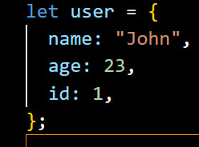

1-chi. Dasturlash tillari bu kompyuterda dasturlar yozish uchun
mujallangan til.Dasturlash tillari ikkita oilaga bo'linadi;yuqori
darajadagi va quyi darajadagi tillar.Assembler: Bunday dasturlash
tilida, kompyuter arxitekturasining boshqa tilga (masalan, C++) tarjima
qilinadigan kompyuter kodini yozish mumkin. Eng asosiy kompyuter
tillaridan biri"
2-chi.JavaScript, web brauzerlarida qo'shimcha funksiyalarni yaratish
uchun ishlatiluvchi dasturlash tili. Bu til asosan brauzer yoki brauzer
o'yinlari, interaktiv saytlar, animatsiyalar, va boshqa foydalanuvchiga
tez javob beruvchi interfeys elementlarini yaratish uchun ishlatiladi.
JavaScript, HTML va CSS bilan birga ishlatilib, veb sahifalarni dinamik
va interaktiv qilishda muhim rol o'ynaydi. Bu til brauzerdagi JavaScript
masalalarni tez va sodda yechishga imkon beradi. Shu sababli,
foydalanuvchining sahifaga biror amal bajarishida brauzer o'zini qayta
yuklash shart emas.
3-chi.Brauzerda console orqali.Node.jsdan foydalanib.Terminalda (CMD)
buyurug'ini terib. Code Runner orqali Javascript kodini ishga tushirish
mumkun.
4-chi. Dasturlashda o'zgaruvchi bu o'zida malumotni saqlab turuvchi quti
yoki joy.
5-chi. . O'zgaruvchini e'lon qilishning ba'zi turlari let, var, const
kabi 3 ta asosiy usul mavjud. "let" va "const" , "var" usul hisoblanadi.
6-chi. let, var, const farqlari esa quyidagicha: "let" o'zgaruvchining
blok qator (block scope) nuqtasiga ega bo'ladi, "var" esa funksiyaga
qadar (function scope) nuqtasiga ega bo'ladi va "const" o'zgaruvchi bir
marta e'lon qilindan so'ng qayta elon qilinmaydi.
7-chi. O'zgaruvchini nomlashda $ belgisi va _ pastki chiziqchadan
foydalanish mumkun.Lekin sonlaran va kalit so'zlardan foydalanish mumkun
emas.
8-chi. Nomlash (naming) Conventions. camelCase, kebab-case, snake_case,
PascalCase(kabancase dan JS da ruxsat berilmagan).JS da asosan camelCase
dan foydalaniladi
9-chi. Const. O'zgaruvchi elon qilishniing yana bir turi.constda
berilgan o'zgaruvchini qayta elon qilib bo'lmaydi . Const elon qilingan
zahotiyoq qiymat berish kerak.
10-chi. **console.log:** Bu funksiya JavaScript konsolida ma'lumot
chiqarish uchun ishlatiladi.Masofaviy dasturlashda yoki brauzerda
JavaScript kodini tekshirishda foydalaniladi. . **alert:** Ushbu
funksiya brauzerdagi modal oynasida foydalanuvchiga xabar ko'rsatadi.
Foydalanuvchi oynadagi modalni yopishi yoki "OK" tugmasini bosishi
mumkin. **prompt:** Prompt foydalanuvchiga ma'lumot so'rab qaytaradi.
Brauzerda modal oyna ochiladi va foydalanuvchidan ma'lumot kiritilmasini
so'rash uchun ishlatiladi. **confirm:** Confirm foydalanuvchiga savol
berib, "OK" yoki "Bekor qilish" tugmalarini chiqaradi. Foydalanuvchi
tanlovini qilganda, ["OK" tugmasini bosganda confirm `true` qiymatini
qaytaradi, "Bekor qilish" tugmasini bosib qo'yganda esa confirm `false`
qiymatini qaytaradi
11-chi . Stringlarni birlashtirish uchun "+" belgisi orqali ishlatish
mumkin.
12-chi . Data typelar ikki oilaga bo'linadi. Primitive va
Reference.Primitive tipiga String, Number, Bigint, Boolean, undefined,
null, Stymbol kiiradi. Reference tipiga - object kiradi.
13-chi. Ularning qiymatlari o'zgarmaydigan o'zgaruvchi sifatida
qo'llaniladi. Primitive turlar: Number, String, Boolean,Bigint, Null,
Undefined, va Symbol.Primativ tiplardagi o'zgaruvchilarda bitta qiymat
saqlanadi.
14-chi . Reference tip yoki ob'ekt shakli JavaScriptda boshqa
ob'ektlarni yasash uchun ishlatiladi. Misol uchun, object, array,
function kabi ob'ekt turlari mana shu ob'ekt tipiga kiradi.Reference
tipda uzgaruvchi uzining ichiga uzgaruvchilarning adresini saqlaydi.
15-chi . JavaScriptda ma'lumotlar turli xil bo'lishi mumkin: String,
Number, BigInt (katta son), Boolean (mantiqiy), Object, Undefined, va
Null.
16-chi. String (matn) ma'lumoti qaerdan, Number (son) esa raqam
qatoridan iborat. Number havfsiz hisob qila oladigan chegarasi 2 ning
53chisi - 1 ,( 2 ⁵³ - 1) .
( console.log(Number.MAX_SOF_INTEGER))
17-chi . BigInt kattasonlarda saqlanadigan ob'ekt, Boolean esa mantiqiy
qiymatni ifodalaydi. Begint yozish uchun son ( 2n)
18-chi . Object massivlarning va funksiyalar kabi strukturalarni
ifodalaydi,Object uzining ichida ko'plab ma'lumot saqlay oladi.
Undefined esa o'zgaruvchi qiymati aniqlanmagan holatda qo'llaniladi.

19-chi . Null esa o'zgaruvchiga hech qanday qiymat bermasdan
qo'llaniladi. Symbole - Takrorlanmas qiymat yaratis uchun.Yozilishi: let
a = Symbole()
20-chi. Shartli operatorlar, misol uchun, if, while, for, switch,
shartlar bo'yicha ishlovchi operatorlardir.
21-chi. Misol

22-chi. JavaScriptda o'zgaruvchiga qiymatni taqdim etish uchun
"assignment" operatori = dan foydalaniladi. Bu operator o'zgarmaslar
(variables)ga qiymat berishda va ularni o'zgartirishda ishlatiladi.
23-chi . JavaScriptda arifmetik operatorlari misol uchun qo'shish (+),
ayirish (-), ko'paytirish (*), bo'lish(/), qoldiqni aniqlash (%) kabi.
24-chi. Solishtiruv operatorlari misol uchun tenglik (==), ko'p (>) yoki
kam (<) bo'ladi.
25-chi. Mantiqiy operatorlar misol uchun AND (&&), OR (||), NOT (!) kabi
bo'ladi.
26-chi . Math.floor -qaysi sonlar orasida yotganiga qaraydi va
kichkinasini olib beradi.Math.ceil qaysi sonlar orasida yotganiga
qaraydi va kattasini olib beradi.
27-chi . Math.round verguldan keyingi songa qaraydi agar u 5 yo 5 dan
katta bo'lsa katta sonni oladi aks holda kichigini oladi.Math.abs bu
sonning moduli olib beradi yani manfiy son bo'lsa musbatga aylantiradi
28-chi . Math.truns qaysi sonlar orasiga yotganiga qaramay sonning butun
qismini olib beradi. Math.random tasodifiy son chiqarish uchun
ishlatiladi.
29-chi . JavaScriptning toFixed() metodining vazifasi, sonning
raqamlarini belgilangan o'nlik qadamga qarab bo'lgan qiymatini
qaytarishdir. Bu metod o'zgaruvchiga yuborilgan sonni qo'llab-quvvatlash
uchun ishlatiladi va undan so'ng o'nlik qadamdan keyin qolgan raqamlar
ko'rsatiladi.
let son = 12.3456;
let toFixedSon = son.toFixed(2);
console.log (toFixedSon); // 12.35
30-chi .Ternary operatorning sintaksi: shart ? ifodalangan_blok_true :
ifodalangan_blok_false;
let yosh = 18;
let ravon = (yosh < 18) ? "Kichkina" : "Katta";
31-chi . Tabii, for sikli bu, biror bir amalni bir nechta marta
takrorlash uchun ishlatiladigan dasturiy operator. Uni odatda
o'zgaruvchilar bilan yana bir umumiy operator bilan birga ishlatiladi.
32-chi . JavaScriptda ma'lumot turlarini bir biriga o'zgartirishning
turli usullari mavjud. Bu protsessni "type conversion" yoki "type
casting" deyiladi. Bu usullar quyidagilar: Implicit Type Conversion
(Avtomatik Tur O'zgartirish) va Explicit Type Conversion - majburlab
o'tkazish.
33-chi . Type conversionning buyuk qismi JavaScriptda avtomatik ravishda
sodir bo'ladigan jarayonlardan biri hisoblanadi. Misol uchun, son va
matnni qo'shishda JavaScript avtomatik ravishda ma'lumotlarni bir-biriga
aylantiradi
34-chi . parseInt() va parseFloat() JavaScriptda matn (string)
ma'lumotini raqamga o'zgartirish uchun ishlatiladigan funktsiyalardir.
parseInt(): Bu funktsiya matnning bosh qismidagi butun sonni ajratib
olish uchun ishlatiladi. Agar matnda bo'sh joy bo'lsa, bu joylar
avvalgi sondan keyin keladi. Misol: javascript Copy code let matn =
"42.5"; let sonButun = parseInt(matn); console.log(sonButun); // 42 Bu
misolda parseInt() funktsiyasi "42.5" ni 42 ga o'zgartiradi.
parseFloat(): Bu funktsiya esa matndagi o'nlik sonni ajratib olish
uchun foydalaniladi. Agar matnda bo'sh joy bo'lsa, bu joylar avvalgi
sondan keyin keladi. Misol: javascript Copy code let matn = "42.5";
let sonO'nlik = parseFloat(matn); console.log(sonO'nlik); // 42.5 Bu
misolda parseFloat() funktsiyasi "42.5" ni o'nlik son ga
o'zgartiradi.
35-chi . String() funksiyasi JavaScriptda o'zgaruvchi qiymatini matnga
o'zgartirish uchun ishlatiladi. Bu funksiya ma'lum bir qiymatni matn
sifatida qaytaradi. Agar funksiya ichiga hech qanday ma'lumot
uzatilmagan bo'lsa, u "undefined" matnini qaytaradi.
toString() metodini ob'ekt (object) turlari (masalan, sonlar, massivlar)
bilan ishlashda ishlatish mumkin. Bu metod o'zgaruvchining qiymatini
matn sifatida qaytaradi
36-chi . false: Boolean turli false qiymatiga ega.
0: Butun son nol qiymatinga ega emas.
"" (Bo'sh qator): Bo'sh qator.
null: Qiymati mavjud emas.
undefined: Qiymati aniqlanmagan.
NaN: "Not a Number" (Raqam emas) ifodasi bilan aniqlangan qiymat.
-0: nol qiymatinga ega emas.
0n: nol qiymatinga ega emas.
-0n: nol qiymatinga ega emas.
37-chi . break — dasturlash tillaridagi kalit so'z, jumladan JavaScript,
siklni muddatidan oldin tugatish yoki undan chiqish uchun ishlatiladi. U
ko'pincha sikllarda (masalan, for yoki while) va switch iboralarida
qo'llaniladi. Break bayonotining asosiy maqsadi ma'lum bir shart
bajarilganda o'rab turgan sikl darhol chiqishdir.
JavaScript-da davom etish iborasi joriy iteratsiya uchun sikl ichidagi
kodning qolgan qismini o'tkazib yuborish va keyingi iteratsiyaga o'tish
uchun sikllar ichida ishlatiladi. Bu, ayniqsa, muayyan shartlar asosida
ma'lum iteratsiyalarni chetlab o'tmoqchi bo'lganingizda foydalidir.
38-chi .
for (let i = 1; i <= 3; i++) { , console.log("Tashqi sikl: " + i); , for
(let j = 1; j <= 3; j++), { console.log(" Ichki sikl: " + j); } }
39-chi . let son = 15; let tartib = 1; while (tartib <= son) {
console.log(tartib); tartib++; }
40-chi . let son = 1; do { console.log("Salom, dunyo! " + son); son++; }
while (son <= 5);
41-chi . let oy = 7; // Misol uchun, 7-noyabr switch (oy) { case 3: case
4: case 5: console.log("Bahor fasli"); break; case 6: case 7: case 8:
console.log("Yoz fasli"); break; case 9: case 10: case 11:
console.log("Kuz fasli"); break; case 12: case 1: case 2:
console.log("Qish fasli"); break; default: console.log("Noto'g'ri oy
raqami"); break; }
42-chi . Funksiya JavaScriptda kodni qayta-qayta ishlatish uchun
ishlatiladi. Funksiya biror amalni bajarganida, shuningdek qayta-qayta
qaytara oladi. function sum(a, b) { return a + b; }
43-chi . Funksiyada return amalga oshirilgan amal natijasini qaytaradi.
44-chi . Funksiyaga argument (ya'ni qiymat) uzatish, funksiya ichidagi
vazifalarni bajarish uchun kerak bo'lgan ma'lumotlarni berishga
imkoniyat yaratadi. Argumentlar funksiya ichidagi parametrlarga
o'tqaziladi.
45-chi . Function expression — bu JavaScriptda funksiyaning bir qiymat
sifatida ifodalangan shakli. U funksiyani bir o'zgaruvchiga tayinlash va
uni o'zgaruvchidan chaqirish imkonini beradi.
46-chi . Arrow function, yoki "uchburchak funksiya", JavaScript tilida
funksiya ifodasini qisqa shakli. Ushbu sintaksisni ishlatish oson va
qulaydir, va unda this qiymati avtomatik ravishda o'zgaruvchining
qiymatiga o'xshaydi.
let salomIsm = (ism) => { console.log("Salom, " + ism + "!"); };
salomIsm("John");
47-chi . Scope elon qilinuvchilarimning qullanilish doirasi. Element
(funksiya yo uzgaruvchi) kurinadigan va boshqa kodga kirishi mumkun
bo'lgan hududni anlatadi. JS da 4-xil toifadagi scope lar mavjud. 1-
Global scope, 2- Local/function scope, 3- Block scope, 4- File/modul
scope.
48-chi . Global scope bu hamma bloklardan tashqarida joylashgan scope.
49-chi . Local / function scope bu funksiyani {""} ichida elon
uzgaruchi. bu funksiyadan tashqarida ishlamaydi
50-chi . Block scope if, for, while va boshqalar kabi kod bloklari
ichida aniqlangan o'zgaruvchilar uchun joydir.
51-chi . File (module) scope, fayl yoki modul ichidagi o'zgaruvchilar
uchun aniqlangan joydir.
52-chi Lexical scope bu o'zgaruvchi yaratilgan joy . o'zgaruvchi yoki
funksiya qayerda elon qilingan bo'lsa usha joy usha o'zgaruvchi yo
funksiya uchun lexical scope hisoblanadi .
53-chi . let va var ning scope lardagi farqlarini tushuntiring.var va
letning scope xususiyatlari: var o'zgaruvchilari "function-scoped"
(funksiya doirasi) xususiyatga ega bo'lib, ularni e'lon qililgan
funksiya ichida o'zgaruvchilar ekan. Bu o'zgaruvchi funksiya ichidagi
har bir joyda foydalanishiga imkoniyat beradi. let esa "block-scoped"
(blok doirasi) xususiyatga ega. Ular e'lon qilingan blok (masalan, if,
for, while bloklari) ichida turadi va blokdan tashqari foydalanilmaydi.
54-chi .Hoisting bu ko'tarilish .Java script kodi ishga tushganda sodir
bo'ladigan hodisa.Java script kodi ishga tushganda hamma o'zgaruvchilar
yoki funksiyalarni olib o'zing scopining eng yuqorisiga olib chiqadigan
hodisa
55-chi . TDZ bu vaqtinchalik ulik zona yani uzgaruvchi oldin console.log
ga chiqarib keyin uni elon qilinganda ikkalasing urtasidagi joy ulik
zona db aytiladi.
56-chi . salomDunyo(); // Salom, Dunyo! function salomDunyo() {
console.log("Salom, Dunyo!"); }
Bu kodda, salomDunyo funksiya e'lon qililmagan joyda chaqirilgan, lekin
JavaScript hoisting tufayli u e'lon qililgan joyda chaqirilgandek
hisoblanadi. Natijada, brauzer konsolida "Salom, Dunyo!" chiqadi.
Hoisting tufayli funksiyalar dastur boshqaqilganda e'lon qilingandan
oldin o'qib olinadi. Bu, funksiyalar va o'zgaruvchilar e'lon qilingandan
oldin ularni chaqirish imkoniyatini beradi.
57-chi . IIFI bu elon qilinishi bilan ishga tushadigan funksiya.
(function() { console.log("Bu IIFE"); })();
58-chi . Pure funksiya, o'zgaruvchi yoki ob'ekt qabul qilmasligi va
yangi o'zgaruvchi yoki ob'ekt qaytaradigan funksiya. Sof funksiya
59-chi .Callback funksiya, bu funksiyaning ichiga argumentiga
beriladigan funksiya
60-chi . Massiv - bu ma'lum bir turlardagi ma'lumotlarni o'z ichiga
olgan joy. Ya'ni, biror qancha sonni o'z ichiga olgan ro'yxatni tasavvur
qilishing mumkin. Misol uchun, [1, 2, 3] - bu massiv, unda uchta element
bor: 1, 2 va 3. Javascriptda massivlar ko'p maqsadlarda ishlatiladi, va
ularga elementlarga murojat qilish, yangi element qo'shish, o'chirish va
boshqa amallarni bajarish imkoniyati berilgan.
61-chi .Object - bu JavaScriptda ma'lum bir obyekt yaratish usuli. Bu,
ma'lum bir turdagi ma'lumotlarni bitta joyda yig'ish imkonini beradi.
Har bir obyekt propertiyalarga (hususiyatlar) ega bo'lib, har bir
propertiyada xususiy ma'lumot o'rnatingan joylardan iborat.
62-chi . Constructor function,object uchun shablon yaratishda
ishlatiladi.
function Shaxs(ism, yosh, kasalxona) { this.ism = ism; this.yosh =
yosh; this.kasalxona = kasalxona; } let shaxs1 = new Shaxs("John", 30,
false); let shaxs2 = new Shaxs("Alice", 25, true);
console.log(shaxs1); // Shaxs { ism: 'John', yosh: 30, kasalxona:
false } console.log(shaxs2); // Shaxs { ism: 'Alice', yosh: 25,
kasalxona: true }
63-chi . JSON (JavaScript Object Notation) - bu ma'lumot almashinuvi va
ma'lumotlarni o'qish uchun ishlatiladigan so'rovlarni aks ettirish
uchun. JSON (JavaScript Object Notation) bizga backend yoki boshqa
dasturchilarga yuborayotganimizda json stringify yani backendga
yuborishda json parse qabul qilayotganda ishlatiladi.
64-chi . JSON.stringify(): Bu funksiya JavaScript obyektini JSON
formatiga o'giradi. Obyektni JSON matnga aylantirish uchun ishlatiladi.
let shaxs = { ism: "John", yosh: 30, kasalxona: false }; let jsonMatn
= JSON.stringify(shaxs); console.log(jsonMatn);
JSON.parse(): Bu funksiya esa JSON formatidagi matnni JavaScript
obyektiga aylantiradi. JSON formatidagi matnni JavaScript obyektiga
o'girish uchun ishlatiladi.
let jsonMatn = '{"ism":"John","yosh":30,"kasalxona":false}'; let
shaxs = JSON.parse(jsonMatn); console.log(shaxs);
65-chi Birinchi qadamda, concat metodini tushuntiramiz. Bu metod
massivlarni bir-biriga qo'shadi va yangi massivni qaytaradi.
let massiv1 = [1, 2, 3]; let massiv2 = [4, 5, 6]; let yangiMassiv =
massiv1.concat(massiv2); console.log(yangiMassiv);
indexOf metodini ko'ramiz. Bu metod massivda berilgan elementni qidiradi
va uning indeksini qaytaradi. Agar element topilmasa -1 qaytariladi.
let massiv = [1, 2, 3, 4, 5]; let indeks = massiv.indexOf(3);
console.log(indeks); // 2
66-chi . find metod: Bu metod massivning har bir elementi uchun berilgan
shartni tekshiradi va birinchi topilgan elementni qaytaradi. Agar hech
qanday element topilmasa, undefined qaytariladi
let massiv = [1, 2, 3, 4, 5]; let natija = massiv.find(element =>
element > 2); console.log(natija); // 3
includes metod: Bu metod berilgan qiymatning massivda mavjud bo'lishini
tekshiradi. Agar qiymat topilsa true, aks holda false qaytariladi.
let massiv = [1, 2, 3, 4, 5]; let natija1 = massiv.includes(3); let
natija2 = massiv.includes(6); console.log(natija1); // true
console.log(natija2); // false
67-chi . forEach metod: Bu metod massivning har bir elementi uchun
berilgan funksiyani chaqiradi.
let massiv = [1, 2, 3, 4, 5]; massiv.forEach(element => {
console.log(element); });
push metod: Bu metod massivning oxiriga yangi element qo'shadi.
let massiv = [1, 2, 3]; massiv.push(4); console.log(massiv); // [1, 2,
3, 4]
68-chi . sort metod: Bu metod massivni tartiblash uchun ishlatiladi. Bu
tartiblash standart alifbo tartibida amalga oshiriladi, bu sabab bilan
sonlar uchun to'g'ri natija olish uchun qo'shimcha funktsiyani
o'zgartirish mumkin.
let massiv = [4, 2, 8, 1, 6]; massiv.sort(); console.log(massiv); //
[1, 2, 4, 6, 8]
reverse metod: Bu metod massivni teskari tartibda saralab chiqadi.
let massiv = [1, 2, 3, 4, 5]; massiv.reverse(); console.log(massiv);
// [5, 4, 3, 2, 1]
69-chi . slice metod: Bu metod massivdan belgilangan qismni oladi va
yangi massiv yaratadi. Bunda asl massiv o'zgarmaydi.
let massiv = [1, 2, 3, 4, 5]; let qisqaMassiv = massiv.slice(1, 4);
console.log(qisqaMassiv); // [2, 3, 4] console.log(massiv); // [1, 2,
3, 4, 5]
splice metod: Bu metod massivni o'zgartiradi, elementlarni o'chirish,
qo'shish yoki almashtirish imkonini beradi.
let massiv = [1, 2, 3, 4, 5]; // 2-indexdagi elementdan boshlab 2 ta
elementni o'chirish massiv.splice(2, 2); console.log(massiv); // [1,
2, 5]
70-chi . Massivlarda flat vs split metodlarini tushuntirib bering
let massiv = [1, [2, 3, [4, 5]], 6]; let flatMassiv = massiv.flat();
console.log(flatMassiv); // [1, 2, 3, [4, 5], 6]
split metod: Bu metod esa matnni belgilangan belgilar boyicha ajratib
olib, yangi elementlardan iborat massivga aylantiradi.
let matn = "Salom,dunyo!"; let massiv = matn.split(',');
console.log(massiv); // ["Salom", "dunyo!"]
71-chi . filter metod: Bu metod massivning har bir elementini tekshirib,
berilgan shartni qanoatlantirsa, uni yangi massivga qo'shadi.
filter metod: Bu metod massivning har bir elementini tekshirib,
berilgan shartni qanoatlantirsa, uni yangi massivga qo'shadi.
some metod: Bu metod massivning har bir elementini tekshirib, bitta ham
shart bajarilsa true, aks holda false qaytaradi.
let massiv = [1, 2, 3, 4, 5]; let natija = massiv.some(element =>
element > 2); console.log(natija); // true
72-chi . every metod: Bu metod massivdagi barcha elementlarni tekshiradi
va har biri berilgan shartni qanoatlantirsa, true, aks holda false
qaytaradi.
var sonlar = [2, 4, 6, 8, 10]; var hammaJuftMi =
sonlar.every(function(son) { return son % 2 === 0; });
console.log(hammaJuftMi); // Natija: true
splice metod: Bu metod massivni o'zgartiradi, elementlarni o'chirish,
qo'shish yoki almashtirish imkonini beradi.
let massiv = [1, 2, 3, 4, 5]; // 2-indexdagi elementdan boshlab 2 ta
elementni o'chirish massiv.splice(2, 2); console.log(massiv); // [1,
2, 5]
73-chi . for...in JavaScriptda obyektlarning yaratilgan obyekt
bo'limlari (property) orasida saylash uchun ishlatiladi. U qator
joylashgan obyektni olib, uning har bir hususiyatiga murojaat qiladi
for (let property in object) { // Obyektning har bir hususiyati uchun
amallar console.log(property + ': ' + object[property]); } Bu yerda
object o'zgaruvchisi obyektni ifodalaydi. Misol uchun: javascript Copy
code let shaxs = { ism: 'John', yosh: 30, kasalxona: false }; for (let
key in shaxs) { console.log(key + ': ' + shaxs[key]); } Bu siklda,
for...in sikli shaxs obyektining har bir hususiyatiga murojaat qiladi
va uning qiymatini konsolga chiqaradi.
Bu siklni massivlarda ishlatmasdan qidirishga yoki massiv elementlarini
saylash uchun foydalanish kerak. Massivlar uchun for...in siklini
ishlatmasdan, for...of yoki forEach siklidan foydalanishingiz maslahat
beriladi.
74-chi . for...of tsikli JavaScriptda iterable obyektlar bilan ishlash
uchun ishlatiladi. Iterable obyekt, massivlar, stringlar, Set, Map,
NodeList va boshqa obyektlarni ifodalaydi, bu obyektlardan har bir
elementni olib, uni amalga oshirish imkonini beradi.
let massiv = [1, 2, 3, 4, 5]; for (let element of massiv) {
console.log(element);}
75 -chi . Object.keys()` - Ob'ektning kalitlaridan massiv yasab beradi
object values obyektning qiymatlaridan massiv yasab beradi
`Object.values()` - Ob'ektning qiymatlarini qaytaradi.
let shaxs = { ism: 'John', yosh: 30, kasalxona: false }; let qiymatlar
= Object.values(shaxs); console.log(qiymatlar); // ["John", 30, false]
76-chi . JavaScriptda string, matn turi bo'lgan obyekt. String,
qutqarilgan yoki qutqarilmagan matnlarni ifodalaydi. Bu matnlar quyidagi
sintaksis bilan yaratiladi: let matn1 = 'Bu bir matn'; let matn2 = "Bu
ham bir matn"; JavaScript stringlari Unicode belgilari bo'yicha
tuzilgan. Bu belgilardan har biriga alohida biror qiymat (ko'd)
bog'langan. Shuningdek, JavaScriptda matnlar qutqarilgan (') yoki
qutqarilmagan (") belgilar orqali ifodalangan. Matn ichidagi belgilardan
biri bo'shliq (') bo'lsa, boshqa belgi bilan tugatilishi kerak.
Stringning uzunligini aniqlash uchun length xususiyati ishlatiladi: let
matn = 'Salom, dunyo!'; console.log(matn.length); // 13 Matnlar ustida
boshqa amallar bajarish uchun bir qancha kutilgan metodlar mavjud. Ba'zi
ular: charAt(index): Berilgan indeksdagi belgini qaytaradi. let matn =
'Salom'; console.log(matn.charAt(1)); // "a" substring(start, end):
Berilgan indeks oraliqda matnning qismi olinadi. let matn = 'Salom,
dunyo!'; console.log(matn.substring(0, 5)); // "Salom" toUpperCase() va
toLowerCase(): Matnni katta harflarga (toUpperCase()) yoki kichik
harflarga (toLowerCase()) o'zgartiradi. let matn = 'Salom';
console.log(matn.toUpperCase()); // "SALOM"
console.log(matn.toLowerCase()); // "salom" Stringlar bilan ishlashda
ko'p qo'llaniladigan metodlar va amallar mavjud va ularni foydalanishdan
ma'naviy foyda olishingiz mumkin.
77-chi . charAt metod: Bu metod berilgan indeksdagi belgini olish uchun
ishlatiladi. Indeks 0 dan boshlab, va matn uzunligi miqdoridan kam
bo'lishi kerak.
let matn = 'Salom'; console.log(matn.charAt(1)); // "a"
concat metod: Bu metod bir yoki bir nechta matnlarni birlashtirib
chiqaradi. Uning asosiy maqsadi ikki yoki undan ko'p matnni birlashtirib
yangi bir matn qaytarish. Misol:
let matn1 = 'Salom'; let matn2 = ', dunyo!'; let yangiMatn =
matn1.concat(matn2); console.log(yangiMatn); // "Salom, dunyo!"
78-chi . replace metod: Bu metod berilgan belgi yoki paternni qidirib,
uni boshqa bir matn yoki belgi bilan almashtiradi. Agar patern
topilmasa, matn o'zgarmaydi. Misol:
let matn = 'Salom, dunyo!'; let yangiMatn = matn.replace('dunyo',
'JavaScript'); console.log(yangiMatn); // "Salom, JavaScript!"
split metod: Bu metod berilgan belgi yoki patern bo'yicha matnni qirqib,
yangi massivga aylantiradi. Misol:
let matn = 'Salom, dunyo!'; let massiv = matn.split(', ');
console.log(massiv); // ["Salom", "dunyo!"]
79-chi . substr metod: Bu metod matnning berilgan indeksdan boshlab
belgilangan uzunlikdagi qismini olish uchun ishlatiladi. Misol:
let matn = 'Salom, dunyo!'; let qisqaMatn = matn.substr(7, 5);
console.log(qisqaMatn); // "dunyo"
substring metod: Bu metod matnning berilgan indekslar oraliqda qismini
olish uchun ishlatiladi. Misol:
let matn = 'Salom, dunyo!'; let qisqaMatn = matn.substring(7, 12);
console.log(qisqaMatn); // "dunyo"
80-chi . toLowerCase: Bu metod matndagi barcha harflarni kichik
harflarga o'zgartiradi. Misol:
let matn = 'Salom, dunyo!'; let kichikMatn = matn.toLowerCase();
console.log(kichikMatn); // "salom, dunyo!"
toUpperCase: Bu metod matndagi barcha harflarni katta harflarga
o'zgartiradi. Misol:
let matn = 'Salom, dunyo!'; let kattaMatn = matn.toUpperCase();
console.log(kattaMatn); // "SALOM, DUNYO!"
81-chi . search metod: Bu metod berilgan qidiruv paternini qidiradi va u
topilganda birinchi uchrashgan indeksni qaytaradi. Agar topilmasa, -1
qiymatini qaytaradi. Misol:
let matn = 'Salom, dunyo!'; let indeks = matn.search('dunyo');
console.log(indeks); // 7
trim metod: Bu metod matndan bosh joylarini (probil, \t, \n, va h.k.)
olib tashlaydi. Misol:
let matn = ' Salom, dunyo! '; let yangiMatn = matn.trim();
console.log(yangiMatn); // "Salom, dunyo!"
82-chi . Infinity bu JavaScriptda maxsus qiymatdir va bu qiymatni biror
sonni noldan katta sifatida ifodalash uchun ishlatish mumkin. Oddiy
tushuncha bilan, agar bir sonni noldan katta bo'lgan son bilan
bo'lishsangiz, natija Infinity ga teng bo'ladi. Agar bir sonni noldan
kichik son bilan bo'lishsangiz, natija -Infinity ga teng bo'ladi.
Masalan:
let son1 = 5 / 0; // Natija: Infinity let son2 = -3 / 0; // Natija:
-Infinity console.log(son1); console.log(son2);
Bu misolda, 5 / 0 ifodasi Infinity ga, -3 / 0 ifodasi esa -Infinity ga
teng bo'ladi. Infinity deb nomlangan bu maxsus qiymatni matematikada
noldan katta sifatida ifodalash uchun ishlatish mumkin
83-chi . BigInt JavaScriptda 2020 yilda qo'shilgan maxsus obyekt bo'lib,
bu obyektlar sonlarni ifodalashda ishlatiladi, lekin 64 bitdan katta
sonlarni qo'llab-quvvatlaydi. BigInt lar iltimos, sonlar biror noldan
katta sonlarsiz belgilashlari va ifodalashlari mumkin, masalan, 123n
yoki
1000000000000000000000000000000000000000000000000000000000000000000000000000000000n.
84-chi . parseInt: Bu funksiya matndan butun sonlarni olish uchun
ishlatiladi. U, matnning boshidagi sonlarni o'qiyan va yolg'iz bo'lgan
qismni qaytaradi. Misol:
let matn = "123.45"; let butunSon = parseInt(matn);
console.log(butunSon); // 123
parseFloat JavaScriptda matndan ondalik sonlarni olish uchun
ishlatiladigan maxsus bir funktsiyadir. U, matnda bo'lgan barcha
sonlarni o'qiyan va butun va ondalik qismni qaytaradi.
let matn1 = "12.34.56"; let matn2 = "text123";
console.log(parseFloat(matn1)); // 12.34
console.log(parseFloat(matn2)); // NaN
85-chi . JavaScript da "symbol" - tipi bizga takrorlanmas qiymat beradi
86. closure haqida ma'lumot bering. "Closure" - Funksiya, o'z ichida
zaklad va muhitni (environment) saqlagan yoki doim ham o'sha muhitni
(environment) yodda tutgan funksiya.
87. Execution context haqida ma'lumot bering. "Execution context" -
JavaScript kodini bajarishdan avval o'z garovchi (scope), this,
o'zgaruvchilar va globallik, uni yaratish uchun kerakli ma'lumotlarni
saqlash uchun alohida joy.
88. Lexical environment haqida ma'lumot bering. 88. "Lexical
environment" - Funksiya yaratilgan vaqtda, o'zgaruvchilar, this, va
ob'ektlar uchun muhitda joylashgan ma'lumot.
89. class nima va unga misol keltiring 89. "Class" - JavaScriptda
klasslar obyektlarni yaratish uchun shablon sifatida ishlatiladi. Ular
ob'ektning prototipi sifatida xizmat qiladi. Misol: class Animal {
constructor(name) { this.name = name; } speak() {
console.log(this.name + ' gapira oladi.'); } } class Dog extends
Animal { speak() { console.log(this.name + ' gavqira oladi.'); } } let
myDog = new Dog('Buddy'); myDog.speak();